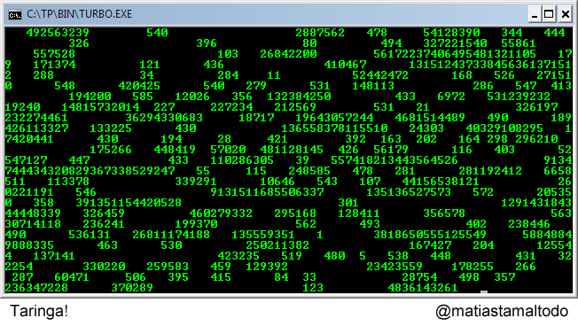

Dado que Cow no es un lenguaje de programación muy utilizado en la industria, no hay muchas novedades o actualizaciones recientes sobre él. El último lanzamiento oficial de Cow fue en 2014, con la versión 0.9.1. Sin embargo, hay algunas iniciativas en línea que buscan mantener vivo el interés en el lenguaje y promover su uso. Por ejemplo, existe una comunidad en línea llamada "The Cow Programming Language User Group" donde los entusiastas de Cow pueden compartir sus proyectos y discutir sobre el lenguaje. Además, algunos programadores han creado nuevas herramientas y bibliotecas para Cow, como un compilador en línea y una biblioteca de gráficos. Estas herramientas pueden ser útiles para aquellos que desean explorar más a fondo las capacidades de Cow y crear programas más avanzados.
Para lo que algunos respectan, no hay muchas novedades oficiales sobre Cow, todavía hay una comunidad activa que lo utiliza y desarrolla nuevas herramientas para él.
